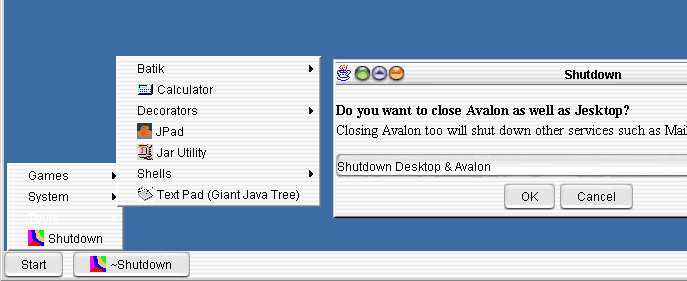

|
|
Jesktop.net - Free/Open Applications |
Sister Site & Jesktop Application
Interface
Implementation Ported ApplicationsJesktop has had a number of applications ported to it. There are a multitude of licenses (some open or free, some not) for these applications. The point about these ported applications is not to start separate forks of some well known apps, but to prove that Jesktop can support many useful apps and to encourage the main app maintainers to continue with Jesktop compatability. Apps in installable form (point SimpleInstaller at the appropriate URL) are in here Source in zip form is in here. Source in tar.gz form is in here. The problem with all source releases is that they contain a full copy of the jars used by ant for building. In some cases that turns a 17Kb download into a 1.4Mb one. If bandwith is an issue for you, or you're likely to really want to play with the apps and their source, you'd be better using CVS to sync with the repository. See CVS and repository details |
Copyright (c) 2001 The Jesktop Project All rights reserved.
|
|